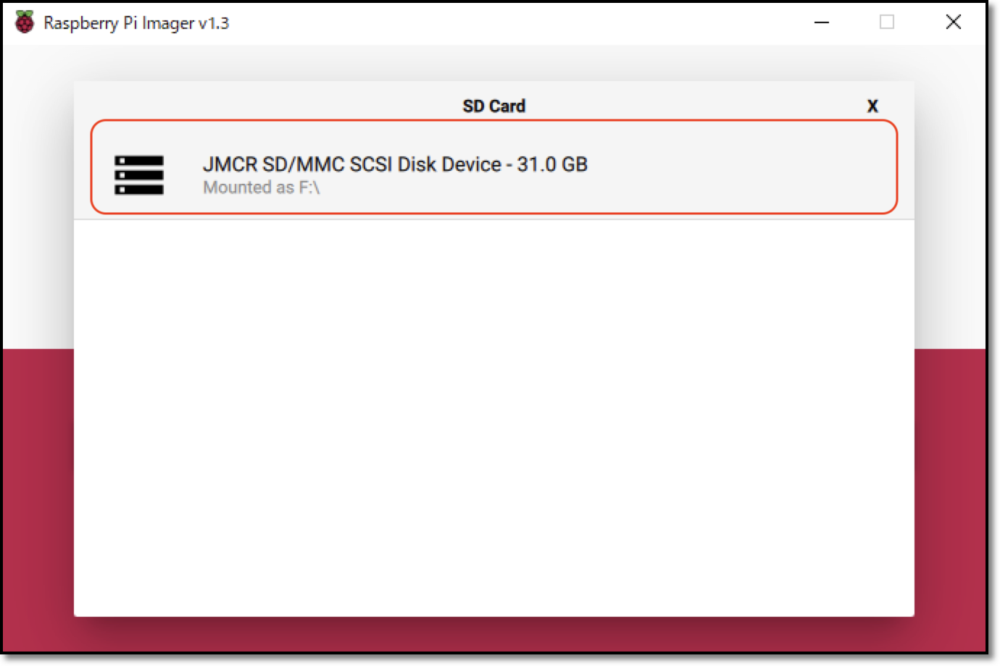
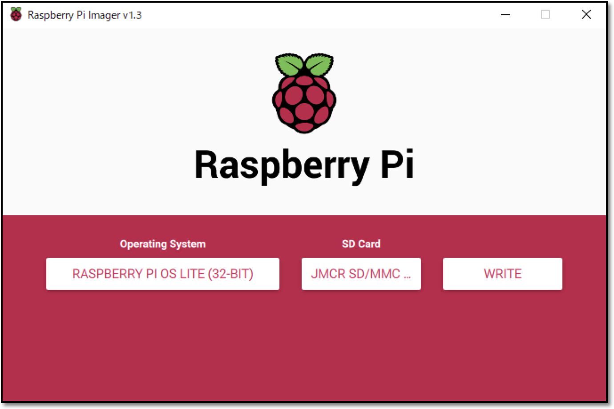
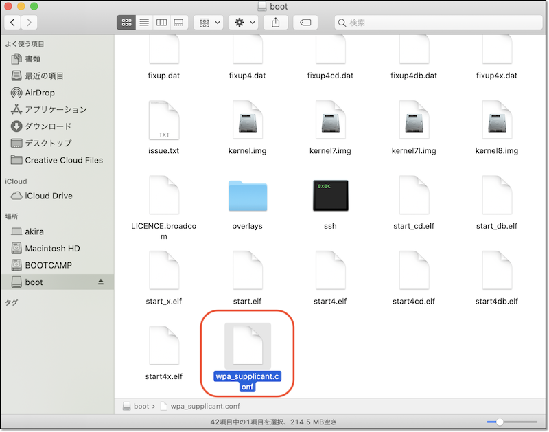
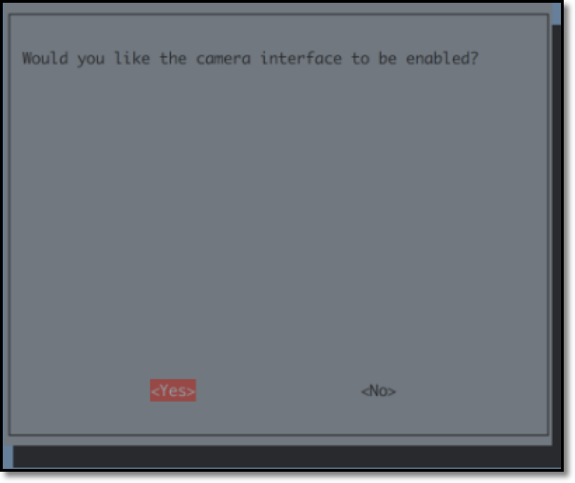
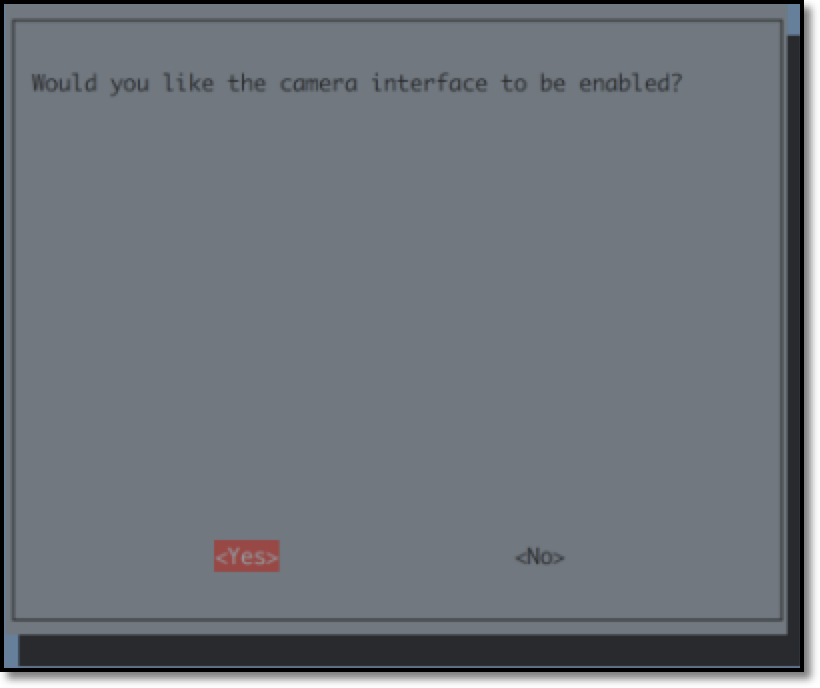

SDカードイメージを最初から作成する方法
インストール済みイメージを使う場合は、本作業をスキップ
DonkeyCarインストール済みイメージを使う場合は、1.車体作成にお進みください。
DonkeyCarイメージを作成するためのインストール手順を解説しています。
Raspberry Piのイメージ
Raspberry Pi用のイメージは、Raspberry Pi Imagerを使って直接micro SDカードに焼き込みます。
イメージの焼き込みに使えるツールは
Raspberry Pi Imagerの他にも、balenaEtcherやDDコマンドなどでも焼き込み可能です。
使用中のOS(Windows/maxOS/Ubuntuに対応)のRaspberry Pi Imagerをダウンロードし、インストールします。
Raspberry pi Imagerを使ってmicro SDカードにOSイメージを焼きます。OSはRaspberry Pi OS Lite (32-bit)を選択します。



sshの有効化
RaspberryPi OSの焼き込みが終わったら、sshの設定をおこないます。

OSイメージをmicro SDカードに焼き込み終わったあとに、SDカードを抜いて、再度PCに挿し直すと、PCでSDカードが認識されます。PCでSDカードを認識したら、bootパーティション直下に空ファイルのsshファイルをコピーします。
ssh
をダウンロードし、SDカードにコピーします。sshファイルの中身はただの空ファイルですが、sshという名前のファイルがSDカードに存在すると、sshでのアクセスが可能になる設定になります。
この方法での結果、raspi-configでsshを有効化すること同じ結果になります。
RasberryPiにキーボードやマウスが装着されていない時に有効
上記方法では、PCでsshの設定ができますので、RaspberryPiにキーボードやマウスが装着されていない時でも、sshでの接続を可能な設定に変更する事が可能です。
WiFiの設定
Wifiの設定も、SDカードにwpa_supplicant.confという名前のファイルをコピーする事で反映させる事が可能です。
wpa_supplicant.conf をダウンロードします。ファイルを編集してSSIDとパスワードを接続先のWiFiルータの値に書き直します。
wpa_supplicant.conf
1 2 3 4 5 6 7 8 9 | |

SDカードのbootパーティション直下にコピーしてください。
sshとwpa_supplicant.confの2ファイルをSDカードのbootにコピーする事で、Wifiに接続しsshで接続可能になります。
Raspberry Piのアップデート
Raspberry Piにログインしてパッケージを更新します。
1 2 | |
Rapberry Piの設定
raspi-configで、I2Cとカメラを有効化します。
Interfacing Options -> Camera -> yes , Interfacing Options -> I2C -> yes を選択して有効化します。
1 | |

 



tabキーを押し、finishボタンを押すことで設定出来ます。
設定を変更すると再起動するので、再度SSHでログインします。
raspi-configのupdate
raspi-config自体もアップデート可能な事があるので、raspi-configを更新しておきたい場合はraspi-configのメニューからアップデートの確認をおこなってください。
HDMI HotPlug 有効化
HDMIのHotPlugの対応を有効化します。HDMIのHotPlugに対応すると、RaspberryPi起動後にHDMIケーブルを差しても、モニターに画面を表示する事ができるようになります。
config.txtを編集
1 | |
/boot/config.txt
1 2 | |
HDMI HotPlugを有効にしないと
標準のイメージでは、電源を投入する前に、RaspberryPiにHDMIケーブルを接続し、その後、電源をOnにしないと、モニターに画面が表示されません。
vimでコピー&ペーストを可能にする
標準のイメージでは、vimでのコピー&ペーストが対応していません。ここでは、vimrcを書き直し、コピー&ペーストに対応させます。
.vimrcを編集
1 | |
/home/pi/.vimrc/
1 | |
Hostnameの修正
標準のイメージでは、Macユーザは ssh pi@raspberrypi.local でRaspberry Piに接続できます。全員同じ名前になると、区別がつかないので、hostname, hosts の 2箇所のhost名を書き直し、独自の名前で呼び出せるようにしておきます。今回は、raspberrypiからdonkeypiに書き直します。
/etc/hostnameを編集
1 | |
/etc/hostname
1 | |
/etc/hostsを編集
1 | |
/etc/hosts
1 2 3 4 5 6 7 8 | |
WindowsではRaspberryPiのHost名検索ができない
Widnowsでは、RaspberryPiのHost名検索ができないので、注意してください。
DonkeyCarのインストール
必要なパッケージ群のインストール
1 2 3 | |
virtualenv環境の構築
python/pip環境をpython3/pip3で構築します。この仮想環境は~/env/に構築されます。
source ~/env/bin/activateコマンドで仮想環境を有効化します。
1 2 3 | |
~/.bashrcファイルに仮想環境を有効化する記述を追加し、ログインに仮想環境を有効化します。
仮想環境から抜け出す場合は
deactivateコマンドで仮想環境を抜けます。
仮想環境を削除したい場合は
pip仮想環境を削除する場合はrm -rf ~/envでディレクトリを削除することで可能です。
DonkeyCarのインストール
参考: DonkeyCar公式ページ
最新のDonkeyCarをインストールします。DonkeyCar公式ページも参考にしてください。
DonkeyCarのインストール
1 2 3 4 5 6 7 8 9 10 11 | |
pip install opencv-pythonは3時間(RaspPi3B+)かかります
pip install opencv-pythonのコマンドで、OpenCV最新版をビルドしてインストールしています。この処理に3時間(RaspPi3B+)で3時間くらいかかります。インストールを急ぎたい場合は、sudo apt-get install python3-opencvのコマンドでインストールも可能です。
OpenCV 4.x関連エラー
エラーが発生しない場合は、本項目はスキップしてください。
OpenCV 4.xは以下のエラーが出る場合があります。
1 2 3 4 5 6 | |
これはOpenCVの問題のようなので、問題が解決されるまで以下のように対応しておきます。
1 2 | |
参考：https://github.com/piwheels/packages/issues/59
DonkeyCar 設定
~/mycarでプロジェクトを作成して、自分の車両用の設定ファイルをテンプレートを作成します。
createcar
1 2 | |
myconfig.pyの編集
1 | |
ステアリングPWM(STEERING_LEFT_PWM,STEERING_RIGHT_PWM)とスロットルPWM(THROTTLE_FORWARD_PWM,THROTTLE_STOPPED_PWM,THROTTLE_REVERSE_PWM)はキャリブレーションを実施して適切な値を入れます。
JOYSTICK_DEADZONEはスロットルオフの時にレコーディングが止まるようにするための閾値を設定します。(0.0だとJoystck使用時はレコーディングが続く場合があるので0.05ぐらいの閾値にします。）
~/mycar/myconfig.py
1 2 3 4 5 6 7 8 9 10 11 12 13 14 15 16 | |
PWMとは
PWMは、信号電圧がHIGHになっている時間と周期で決まります。一般的なRC Carの場合、周期は50-66.6Hz、HIGHの時間は1000-2000μsです。しかし統一した規格があるわけではないので、メーカー、サーボ、受信機、ESC、それぞれバラバラです。メカを選ぶ際は相性を調べる必要があります。
PCA9685でPWMを生成する場合は、PCA9685チップのレジスタに書き込む値として250-500範囲の値を使います。PCA9685はレジスタに書き込まれている値からPWM信号を出力します。
また、DonkeyCarはPCA9685の動作周期を60Hzで初期化するようにハードコーディングされています。
OLED設定
新しいFaBo DonkeyBoardにはOLEDが搭載されています。それに伴い、FaBo DonkeyCarでは、Raspberry Pi起動時に、IPアドレスを表示することが可能になりました。 ここでは、その設定方法を説明します。
Raspberry Pi3A+ではハードウェア構成が違う
DonkeyCarの最新パッケージ(3.1.5)は、走行時にOLEDを表示する拡張が入りました。一方で、RaspberryPi 3A+のようにハードウェア構成が違う場合は、エラーが発生します。エラーの原因は、ネットワークインターフェースが存在しない事が原因で発生します。
FaBo DonkeyCar用に、下記パッケージをインストールします。
FaBo DonkeyCarのOLEDの拡張パッケージのダウンロードと設定
1 2 3 4 5 6 | |
/etc/rc.localのexit 0の前にOLEDを表示するスクリプトの実行を追加します。
/etc/rc.localの編集
1 | |
/etc/rc.local
1 2 3 4 5 6 | |
rc.local有効化
1 2 3 4 | |
再起動後
1 | |
うまくパッケージが反映されれば、RaspberryPiのIPアドレスが表示されるようになります。